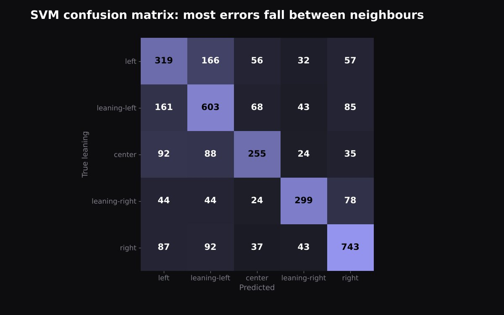
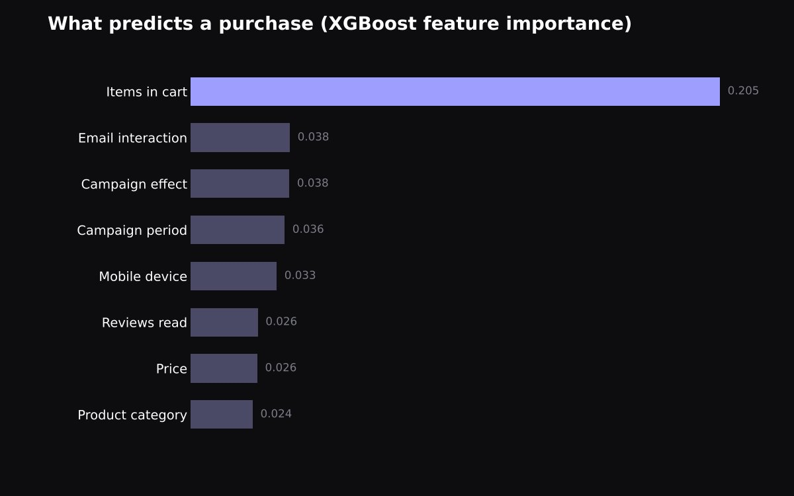

Projects
Hackathons, side projects and class work. Click a project to open its code on GitHub.

Leasely
An iPhone app that helps French landlords rent out a flat without an agency: scan the energy certificate, check what the law allows, generate the lease and sign it. We built it in two days, as a team of four.
- SwiftUI
- Apple Foundation Models
- Vision
- PDFKit

FuelX
Take a photo of your meal, say how hard you trained, and get a score out of 10 with one thing to change. It runs on a free, local vision model.
- Python
- LLaVA
- Streamlit
- SQLite
- Docker

HarmonIQ
Playlists made from the songs you already like. We grouped over a million Spotify tracks into 100 clusters and deployed it with FastAPI and Docker on GCP.
- PCA
- K-means
- FastAPI
- GCP

Political bias in the news
Placing a news article from left to right using only its words. Most of our model's mistakes were between neighbouring classes.
- NLP
- TF-IDF
- SVM
- scikit-learn

Who will buy?
Predicting which shoppers will buy during a campaign with XGBoost. 77.8% F1. The number of items in the cart mattered most by far.
- XGBoost
- Optuna
- pandas
smaller things
Practice and coursework
EY AI & Data Challenge
Forecasting water quality at 200+ river sites from satellite data.
CompetitionTravel booking database
A PostgreSQL database for flights, hotels and bookings, designed from scratch.
Databases classNeural network from scratch
Backpropagation written by hand in NumPy.
GitHubHeart failure prediction
Comparing classifiers on clinical data.
GitHubKNN from scratch
Nearest neighbours without ML libraries.
GitHubLinear regression from scratch
Closed form and gradient descent.
GitHub